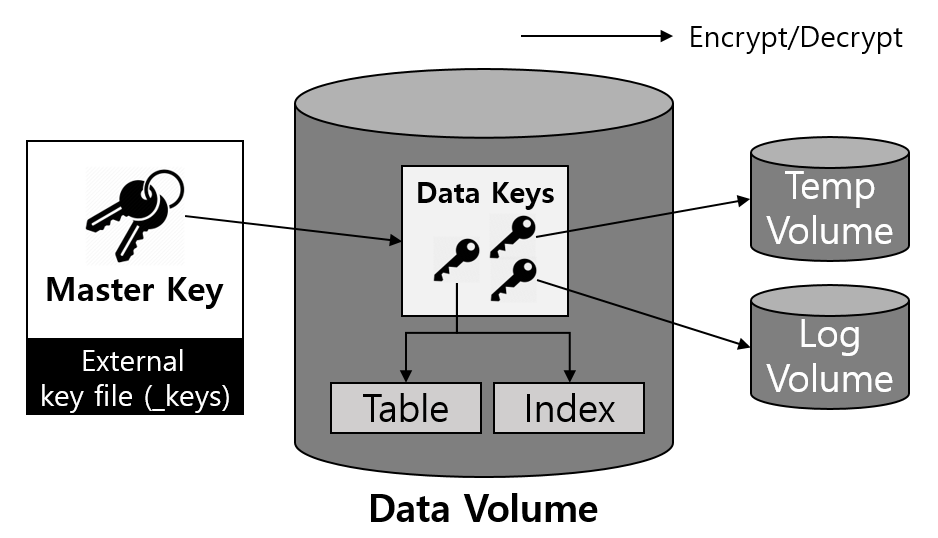

CUBRID 보안¶
이 장에서는 사용자 데이터베이스를 보호하기 위해서 CUBRID에서 제공하는 패킷 암호화, 서버 접근제어, 권한 관리 및 TDE(Transparent Data Encryption) 의 보안 기능에 대해 설명한다.
패킷 암호화¶
패킷 암호화 필요성¶
클라이언트와 서버 간에 암호화 연결을 사용하지 않을 경우, 네트워크에 접근 가능한 해커가 모든 트래픽을 감시하고 클라이언트와 서버 간에 주고받는 데이터를 탈취하여 악용할 수 있다. 이렇게 제3자(중간자)가 정보를 탈취하여 악용하는 것을 중간자 (MITM, Man in the Middle) 공격이라 한다. 이 중간자 공격은 클라이언트와 서버간 연결에 보안 인증 절차를 추가하여 방지할 수 있다.
패킷 암호화 방법¶
큐브리드는 클라이언트와 서버 간에 전송되는 데이터를 암호화 하기 위해 SSL/TLS (Secure Socket Layer/Transport Layer Security) 프로토콜을 사용한다. 큐브리드 서버는 암호화를 위해 OpenSSL을 사용하였으며, 클라이언트는 JDBC, CCI Driver를 이용하여 암호화 연결을 할 수 있다. 클라이언트와 서버 간에 지원하는 암호화 프로토콜은 SSLv3, TLSv1, TLSv1.1, TLSv1.2 이다.
Note
SSL/TLS
SSL 란 네트워크를 통해 작동하는 클라이언트와 서버 간에 인증 및 데이터 암호화를 제공하는 암호화 프로토콜로 Netscape에 의해 처음 개발 되었다. Nescape는 1996년 보안 결함을 개선한 3.0 버전을 릴리즈하였다. SSL 3.0 버전은 TLS 1.0의 기초가 되고, 1999년 1월 IETF에서 RFC2246 표준 규약으로 정의되었고. 마지막 갱신은 RFC5246 이다. TLS는 SSL 3.0 을 기반으로 정의되었기 때문에 SSL 3.0과 거의 유사하다.
SSL/TLS 은 서버 인증(Server Authentication), 클라이언트 인증(Client Authentication) 그리고 데이터 암호화(Data Encryption) 기능을 제공한다. 인증(Authentication)은 상대방이 맞는지 확인하는 절차를 의미하며, 암호화는 데이터를 탈취 하더라도 내용을 열람할 수 없게 하는 것을 의미한다.
패킷 암호화를 위한 서버 설정¶
암호화 모드 및 비암호화 모드 설정
큐브리드는 암호화 모드 또는 비암호화 모드를 설정할 수 있으며, 기본은 비암호화 모드이다. 암호화 모드로 변경하기 위해서는 cubrid_broker.conf 의 SSL 파라메터 값을 변경하여 암호화 모드로 설정 할 수 있다. cubrid_broker.conf 의 SSL 파라메터 값을 변경하였다면 반드시 브로커를 재 시작해야 한다. 자세한 설정 방법은 브로커 설정을 참조한다.
인증서 (Certificate) 와 개인키 (Private Key)
SSL은 대칭형(symmetric)키를 이용하여 송수신 데이터를 암호화한다 (클라이언트와 서버가 같은 세션키를 공유하여 암복호함). 클라이언트가 서버에 연결할 때마다 새롭게 생성되는 세션키를 암호화한 형태로 교환하기 위해서 비 대칭 (asymmetric) 암호화 알고리즘을 사용하며, 이를 위해서 서버의 공개키와 개인키가 필요하다.
공개키는 인증서에 포함되어 있으며, 인증서와 개인키는 $CUBRID/conf 디렉터리에 있으며 각각의 파일명은 ‘cas_ssl_cert.crt’ 와 ‘cas_ssl_cert.crt’ 이다. 이 인증서는 OpenSSL의 명령어 도구를 이용하여 생성된 것이며 ‘self-signed’ 형태의 인증서이다.
사용자가 원하는 경우 IdenTrust나 DigiCert와 같은 공인 인증기관에서 발급 받은 인증서로 대체 가능하며, OpenSSL 명령어 도구로 새롭게 생성하여 대체하는 것도 가능하다. 아래의 예는 OpenSSL 명령어 도구를 이용하여 개인키와 인증서를 생성하는 것이다.
$ openssl genrsa -out my_cert.key 2048 # 2048 bit 크기의 RSA 개인키 생성
$ openssl req -new -key my_cert.key -out my_cert.csr # 인증요청서 CSR (Certificate Signing Request)
$ openssl x509 -req -days 365 -in my_cert.csr -signkey my_cert.key -out my_cert.crt # 1년 유효한 인증서 생성
위에서 생성된 my_cert.key 와 my_cert.crt 를 각각 $CUBRID/conf/cas_ssl_cert.key와 $CUBRID/conf/cas_ssl_cert.crt로 대체하면 된다.
지원하는 드라이버¶
큐브리드는 다양한 드라이버를 재공하고 있으나, 현재 패킷 암호화 연결을 지원하는 드라이버는 JDBC, CCI 이다.
암호화 연결 방법
클라이언트는 드라이버 연결 설정 중 db-url의 useSSL property를 사용하여 서버와 암호화 연결을 할 수 있다. 자세한 사용 방법은 JDBC 드라이버의 연결 설정 또는 CCI 드라이버의 cci_connect_with_url을 참고한다.
서버 접근제어¶
큐브리드는 브로커와 데이터베이스 서버의 2계층에서 인가된 사용자 또는 응용프로그램만 접근이 가능한 제어 기능을 지원한다. 브로커의 접근 제어는 웹과 웹 어플리케이션 서버(Web Application Server)등과 같은 응용프로그램들의 접근을 제어하는데 주로 사용하고, 데이터베이스 서버의 접근 제어는 브로커 및 csql 인터프리터등의 접근을 제어하는데 주로 사용한다.
자세한 내용은 브로커 서버 접속 제한 과 데이터베이스 서버 접속 제한 을 참조한다.
권한 관리¶
큐브리드는 사용자(그룹)를 생성할 수 있고, 사용자가 생성한 테이블에 대해 다른 사용자(그룹)의 접근 여부를 제어할 수 있는 기능을 제공한다.
자신이 만든 테이블에 다른 사용자(그룹)의 접근을 허용하려면 GRANT 구문을 사용하여 해당 사용자(그룹)에게 적절한 권한을 제공해야 한다. 접근 권한을 해지하기 위해서는 REVOKE 구문을 사용하여 해당 사용자(그룹)으로부터 권한을 회수할 수 있다. PUBLIC 사용자가 생성한 (가상) 테이블은 권한 제공 절차 없이 모든 사용자에게 접근이 허용된다.
자세한 내용은 사용자 관리 를 참조한다.
TDE (Transparent Data Encryption)¶
CUBRID TDE 개념¶
큐브리드는 Transparent Data Encryption (이하 TDE) 를 지원한다. TDE란 사용자의 관점에서 투명하게 (Transparent) 데이터를 암호화하는 것을 의미한다. 이를 통해 사용자는 애플리케이션의 변경을 거의 하지 않고 디스크에 저장되는 데이터를 암호화할 수 있다.
큐브리드 TDE는 암호화로 인한 성능 저하를 최소화하기 위하여 엔진 레벨에서 암복호화를 제공한다. 사용자가 암호화된 테이블을 생성하면 디스크에 저장되는 관련 유저 데이터 (data at rest)는 모두 자동으로 암호화된다. 큐브리드는 TDE를 제공함으로써 사용자가 다양한 현장에서 요구되는 보안 규정 및 지침을 준수할 수 있게 한다.
테이블 암호화
큐브리드에서는 테이블을 암호화 대상으로 설정한다. TDE 기능을 사용하기 위해서는 다음과 같이 ENCRYPT 옵션을 사용하여 테이블을 생성한다. 자세한 내용은 테이블 암호화 (TDE) 를 참고한다.
CREATE TABLE tde_tbl (att1 INT, att2 VARCHAR(20)) ENCRYPT=AES;
암호화된 테이블이 생성되면 테이블에 관련된 모든 데이터는 디스크에 쓰일 때 자동으로 암호화되고, 메모리로 읽어올 때 복호화된다. 관련 데이터는 단순히 테이블뿐만 아니라, 테이블에 생성되는 인덱스, 테이블과 관련된 질의 수행 중 생성되는 임시 데이터, 데이터 변경 시 생성되는 로그, DWB, 백업 등 모든 연관 데이터를 포함한다. 자세한 내용은 암호화 대상 과 제약 사항 을 참고한다.
키 관리¶
큐브리드는 데이터를 암호화하기 위하여 대칭키 알고리즘을 사용한다. 암복호화에 사용되는 키는 효율성을 위하여 마스터 키와 데이터 키로 구성된 2 계층으로 관리된다. 사용자가 관리하는 마스터 키는 별도의 파일에 저장되며, 큐브리드는 이를 관리할 수 있는 도구를 제공한다.
2 계층 키 관리¶
큐브리드 TDE는 다음과 같이 마스터 키와 데이터 키로 이루어진 2 계층으로 암호화 키를 관리한다.
{kind=link}

마스터 키: 데이터 키를 암복호화할 때 사용되는 키로, 사용자에게 공개되어 관리되는 키
데이터 키: 실제 테이블 및 로그 등의 유저 데이터를 암호화할 때 사용되는 키로, 큐브리드 엔진이 사용하는 키
데이터 키는 데이터 볼륨 안에서 별도로 관리되며 디스크에 저장될 때에는 마스터 키를 사용해 항상 안전하게 암호화된다. 마스터 키는 별도의 파일에 저장되며 사용자의 보안 정책에 따라 안전하게 관리되어야 한다.
2 계층으로 키를 관리하는 것은 키 변경 오퍼레이션을 효율적으로 수행할 수 있게 해준다. 만약 실제 데이터를 암호화하는 키만 존재한다면, 키를 변경할 경우에 모든 데이터를 다시 읽어 들여 복호화 및 재암호화하는 과정을 거쳐야 하기 때문에 작업 시간이 오래걸리고 그 과정동안 데이터베이스의 전체적인 성능 저하를 가져올 수 있다.
Warning
마스터 키 유실
마스터 키가 유실될 경우 TDE를 사용하여 암호화된 데이터는 다시 읽어 들일 수도, 변경할 수도 없다.
파일 기반의 마스터 키 관리¶
마스터 키는 사용자가 개별 보안 요구사항에 맞게 다양한 방법으로 키를 관리할 수 있도록 별도의 키 파일로 따로 저장되어 관리된다. 키 파일에는 마스터 키의 정보가 모두 들어가 있기 때문에 유출될 경우 보안상의 문제가 발생할 수 있고, 분실할 경우에는 암호화된 정보를 읽어 들일 수 없으므로 (TDE 기능을 사용할 수 없을 때의 동작) 관리에 주의가 필요하다.
키 파일은 기본적으로 createdb 를 사용해 데이터베이스 생성 시에 데이터 볼륨이 생성되는 위치에 <database-name>_keys 이름으로 함께 생성된다. 이후 별도의 조작을 하지 않을 경우 해당 키 파일이 자동으로 사용된다. 참조할 키 파일의 위치는 시스템 파라미터를 통해서 변경 가능하다. 자세한 내용은 디스크 관련 파라미터 를 참고한다.
키 파일은 다수의 마스터 키를 포함할 수 있다 (최대 128개). 다수의 마스터 키 중 하나의 키를 등록하여 데이터베이스를 암호화하는 데 사용한다. 기본적으로 키 파일이 생성될 때 하나의 마스터 키를 포함하며 사용자는 TDE 유틸리티 (TDE 유틸리티)를 사용하여 키를 추가, 제거, 변경, 조회할 수 있다. 키 제거 시에는 해당 키가 키 파일에 존재해야 하며, 현재 데이터베이스에 등록된 키는 제거할 수 없다. 데이터베이스에 등록된 키를 변경 시에는 이전에 사용하던 키와 등록하려는 키가 모두 키 파일 안에 존재해야 한다. 키 조회를 통해 키의 개수, 생성 시간 등을 확인할 수 있고 현재 데이터베이스에 등록된 키와 등록 시간 등을 확인할 수 있다.
$ cubrid tde --show-keys testdb
Key File: /home/usr/CUBRID/databases/testdb/testdb_keys
The current key set on testdb:
Key Index: 2
Created on Fri Nov 27 11:14:54 2020
Set on Fri Nov 27 11:15:30 2020
Keys Information:
Key Index: 0 created on Fri Nov 27 11:11:27 2020
Key Index: 1 created on Fri Nov 27 11:14:47 2020
Key Index: 2 created on Fri Nov 27 11:14:54 2020
Key Index: 3 created on Fri Nov 27 11:14:55 2020
The number of keys: 4
Note
기존의 키 파일을 사용하는 데이터베이스 생성
보안정책 등의 이유로 기존에 관리하던 키 파일을 사용하여 새로운 데이터베이스를 생성하고 싶다면, 데이터베이스 생성 전에 데이터베이스를 생성하려는 경로에 해당 키 파일을 먼저 복사 혹은 이동시켜두면 둔다. 이때, 키 파일의 이름은 <database_name>_keys 으로 변경해야 한다. 만약 tde_keys_file_path 시스템 파라미터를 사용 중이라면 파라미터로 설정된 경로로 키 파일을 복사한다.
암호화 대상¶
영구 데이터 암호화¶
암호화된 테이블의 데이터와 모든 인덱스의 데이터가 암호화된다. 테이블 암호화에 대한 자세한 내용은 테이블 암호화 (TDE) 을 참고한다.
임시 데이터 암호화¶
테이블과 같은 영구 데이터 외에도 암호화 테이블과 관련된 질의 수행 중 생성되는 임시 데이터 또한 암호화된다. 예를 들어 SELECT * FROM tde_tbl ORDER BY att1 과 같은 질의를 수행하거나 tde_tbl 에 인덱스를 생성하는 과정 등에서 생성된 임시 데이터는 모두 암호화되어 디스크에 저장된다. 임시 데이터에 대한 자세한 내용은 일시적 볼륨(Temporary Volume) 를 참고한다.
로그 데이터 암호화¶
암호화된 테이블이 변경되면서 발생하는 REDO, UNDO 로그 레코드에 암호화가 필요한 데이터가 포함될 수 있으므로, 암호화 테이블과 관련된 모든 로그 정보를 암호화한다. 암호화는 활성 로그 와 보관 로그에 모두 적용된다. 로그 볼륨에 대한 자세한 내용은 데이터베이스 볼륨 을 참고한다.
DWB 암호화¶
영구 데이터는 데이터 볼륨에 쓰이기 전에 이중 쓰기 버퍼 (Double Write Buffer, DWB)에 일시적으로 쓰는데, 이때에도 암호화된 테이블에 대한 데이터를 포함될 수 있으므로 암호화된다. DWB에 대한 자세한 내용은 데이터베이스 볼륨 을 참고한다.
백업 볼륨 암호화¶
데이터 볼륨과 로그 볼륨에 암호화된 테이블이 있는 경우 백업 볼륨에도 동일하게 암호화된 상태로 저장된다. 백업에 대한 자세한 내용은 backupdb 를 참고한다.
백업 키 파일
백업 볼륨에는 기본적으로 키 파일이 포함된다. 키 파일을 포함한 백업 볼륨이 유출될 경우, 볼륨 내의 데이터들은 암호화되어 있지만, 마스터 키도 함께 유출되므로 보안상의 문제가 있을 수 있다. 이를 방지하기 위해서는 --separate-keys 를 통해 키를 분리하여 백업할 수 있다. 하지만, 이렇게 키 파일을 분리한 경우에는 복구를 위해 키 파일을 분실하지 않게 관리해야 한다. 분리된 백업 키 파일은 백업 볼륨과 같은 경로에 생성되며 <database_name>_bk<backup_level>_keys 라는 이름을 가진다.
$ cubrid backupdb -S --separate-keys testdb
Backup Volume Label: Level: 0, Unit: 0, Database testdb, Backup Time: Mon Nov 30 14:34:49 2020
$ ls
lob testdb testdb_bk0_keys testdb_bk0v000 testdb_bkvinf testdb_keys
testdb_lgar_t testdb_lgat testdb_lginf testdb_vinf
백업 복구 시 키 파일 선택
백업 시에 분리된 키 파일은 백업 복구 (restoredb)를 수행할 때 --keys-file-path 옵션을 통해 복구에 사용할 키 파일로 지정해 줄 수 있다. 지정한 경로에 올바른 키 파일이 존재하지 않을 경우 백업 복구는 실패한다.
--keys-file-path 옵션이 주어지지 않을 경우에는 백업 복구 (restoredb)에서 다음의 우선 순위에 따라 사용할 키 파일을 탐색한다. 올바른 키 파일을 찾을 수 없다면 복구에 실패한다.
키 파일 분류
서버 키 파일: 일반적으로 서버 실행 시 참조하는 키 파일로 tde_keys_file_path 시스템 파라미터로 설정되어 있거나 기본 경로에 있는 키 파일.
백업 키 파일: 백업 시에 생성된 키 파일로 백업 볼륨 내에 포함되어 있거나, --separate-keys로 분리된 키 파일.
백업 복구 시 키 파일 탐색 순서
백업 볼륨이 포함하고 있는 백업 키 파일
백업 시에 --separate-keys 옵션으로 생성된 백업 키 파일 (e.g. testdb_bk0_keys). 이 키 파일은 백업 볼륨과 같은 위치에 존재해야 한다.
시스템 파라미터 tde-keys-file-path 로 지정된 경로에 있는 서버 키 파일
데이터 볼륨과 같은 위치에 있는 서버 키 파일 (e.g. testdb_keys)
Note
(1)에서 백업 볼륨이 키 파일을 포함하고 있을 경우, 백업 볼륨 압축해제 과정에서 –separate-keys 를 통해 생성한 것과 같은 이름으로 백업 키 파일이 생성된다.
올바른 키 파일을 찾지 못하더라도 백업 볼륨에 암호화된 데이터가 전혀 없다면 복구에 성공할 수 있다. 하지만, 키 파일이 존재하지 않으므로 이후에 TDE 기능을 사용할 수 없다.
Note
증분 백업의 경우
증분 백업되어 여러 백업 볼륨을 사용하여 백업 복구를 수행할 경우, --level 옵션으로 지정하는 레벨의 백업 키 파일을 사용한다. --level 옵션을 지정해주지 않을 경우에는 가장 높은 레벨의 백업 키 파일을 사용한다. 사용하는 키 파일만 존재하면 복구가 가능하며, 해당 키 파일은 반드시 존재해야 한다.
Note
백업 키 파일을 분실한 경우
기본적으로 백업 키 파일을 분실한 경우에는 백업 복구를 수행할 수 없다. 하지만 키를 변경하지 않은 경우, 이전 볼륨의 백업 키 파일을 --keys-file-path 옵션으로 지정하여 복구가 가능하다. 또한, 기본 경로에 이전 볼륨의 백업 키가 존재한다면 백업 복구에 사용할 수 있다.
Note
백업 복구 완료 후 등록 키가 변경되는 경우
백업 복구 완료 후 데이터베이스에 등록된 키가 데이터베이스 키 파일에 존재하지 않을 경우, 백업 키 파일이 서버 키 파일로 복사되고 해당 키 파일의 첫 번째 키가 데이터베이스를 암호화하는 마스터 키로 임의로 지정된다. 이는 백업복구 완료 시의 데이터베이스에 등록되어있는 마스터 키가 어떠한 키 파일에도 존재하지 않을 수 있기 때문이다.
암호화 알고리즘¶
큐브리드에서 제공하는 대칭키 암호화 알고리즘은 다음과 같다.
TDE 암호화 알고리즘
알고리즘 |
키 크기 |
옵션 이름 |
|---|---|---|
Advanced Encryption Algorithm |
256 bits |
AES |
ARIA |
256 bits |
ARIA |
Advanced Encryption Algorithm (AES) 는 미국 표준 기술 연구소 (NIST)에 의해 제정된 암호화 방식으로 세계적으로 널리 사용 되고 있는 알고리즘이다. 안정성이 높고 많은 플랫폼에서 하드웨어 가속 등의 최적화를 지원하여 암복호화시 성능 저하가 적다. ARIA 는 대한민국의 국가 표준 암호화 알고리즘 중 하나로 경량 환경 및 하드웨어 구현에 최적화된 알고리즘이다.
Note
기본 암호화 알고리즘
TDE 암호화 테이블 생성 시 알고리즘을 지정하지 않으면 AES를 기본적으로 사용한다. 만약, 기본 암호화 알고리즘을 변경하고 싶을 경우에는 시스템 파라미터 tde_default_algorithm 을 통해 변경 할 수 있다. 설정된 기본 암호화 알고리즘은 테이블 외에도 로그나 임시 데이터를 암호화할 때에도 사용된다. 테이블 생성 시 암호화 알고리즘 지정에 대한 자세한 설명은 테이블 암호화 (TDE) 을 참고한다.
암호화 테이블 확인¶
테이블의 암호화 여부는 세 가지 방법으로 확인할 수 있다.
SHOW CREATE TABLE 구문 이용¶
csql> show create table tde_tbl1;
=== <Result of SELECT Command in Line 1> ===
TABLE CREATE TABLE
============================================
'tde_tbl1' 'CREATE TABLE [tde_tbl1] ([a] INTEGER) REUSE_OID, COLLATE iso88591_bin ENCRYPT=AES'
1 row selected. (0.144627 sec) Committed.
1 command(s) successfully processed.
db_class 시스템 카탈로그에 질의¶
시스템 카탈로그인 db_class 혹은 _db_class 의 tde_algorithm 속성을 통해 각 테이블의 암호화 여부 및 암호화 알고리즘을 파악할 수 있다. 시스템 카탈로그에 대한 자세한 내용은 시스템 카탈로그 를 참고한다.
csql> select class_name, tde_algorithm from db_class where class_name like '%tde%';
=== <Result of SELECT Command in Line 1> ===
class_name tde_algorithm
============================================
'tde_tbl1' 'AES'
'tde_tbl2' 'ARIA'
'not_tde_tbl' 'NONE'
3 rows selected. (0.057243 sec) Committed.
1 command(s) successfully processed.
cubrid diagdb 유틸리티를 통한 확인¶
cubrid diagdb 유틸리티의 -d1(dump file tables) 옵션에서 암호화된 테이블, 인덱스 파일들의 파일 헤더정보 중 tde_algorithm 을 참조하여 확인할 수 있다. 자세한 내용은 diagdb 를 참고한다.
$ cubrid diagdb -d1 testdb
...
Dumping file 0|3520
file header:
vfid = 0|3520
permanent
regular
tde_algorithm: AES
page: total = 64, user = 1, table = 1, free = 62
sector: total = 1, partial = 1, full = 0, empty = 0
...
HA 환경에서의 TDE¶
HA 구성 시 각각의 노드마다 독립적으로 TDE가 적용된다. 이는 각 노드마다 키 파일 및 TDE 관련 시스템 파라미터들이 독립적으로 관리 될 수 있음을 의미한다.
단, 복제된 테이블의 TDE 정보는 공유되므로 마스터 노드의 TDE 테이블을 변경하려 할 때, 슬레이브 노드의 TDE 모듈이 로드되어 있지 않다면 복제가 멈추게 된다. 이때는 TDE 테이블뿐만 아니라 그 이후의 변경에 대한 복제도 수행하지 못한다. 이후 슬레이브 노드의 TDE 구성을 올바르게 한 후 재시작할 경우 중단된 부분부터 복제가 재개된다.
TDE 기능을 사용할 수 없을 때의 동작¶
다음과 같은 경우에는 TDE 기능을 사용할 수 없고, TDE 모듈이 올바르게 로드되지 않았다고 오류를 발생한다.
올바른 키 파일을 찾을 수 없을 때
키 파일 내에 데이터베이스에 등록된 키를 찾을 수 없을 때
TDE 모듈이 로드되지 못한 경우에도 서버는 온전히 구동되며, 사용자는 암호화되지 않은 테이블들에 대해서는 접근할 수 있다. 이는 해당 테이블에 대한 SELECT, INSERT 등 모든 DML 및 DDL을 수행할 수 없음을 의미한다. 단, 큐브리드는 TDE 모듈이 로드되지 못하였다 하더라도 서버는 온전하게 실행되며, 암호화되지 않은 테이블들에 대해서는 접근할 수 있도록 한다.
TDE 모듈을 로드하지 못한 상태에서 로그 데이터가 암호화되어 있고 해당 로그가 리커버리, HA, VACUUM 등에 의해 접근될 경우에는 시스템이 올바르게 수행될 수 없으므로 서버 전체가 동작을 정지한다.